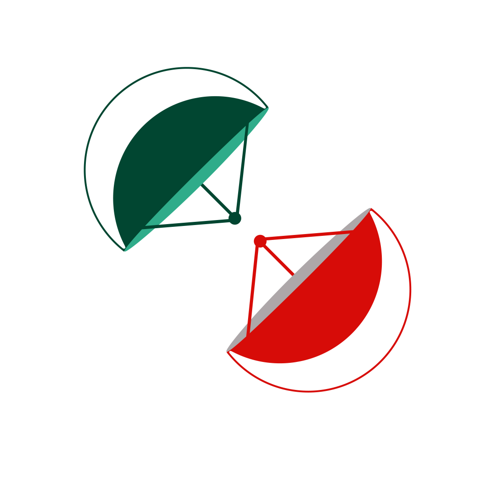
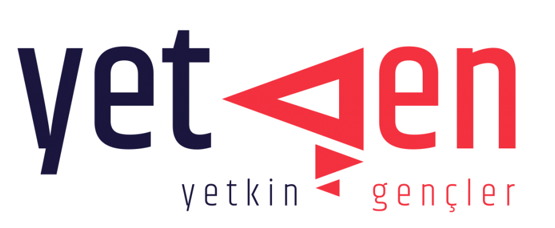
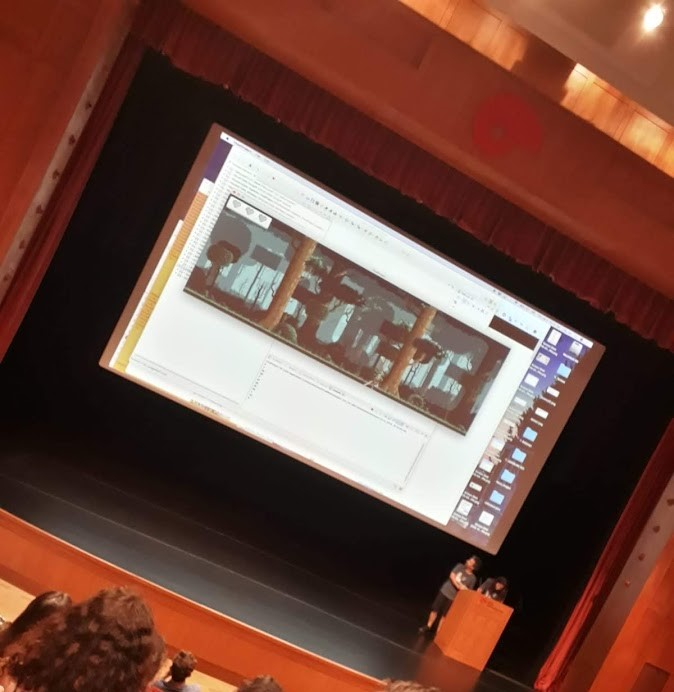
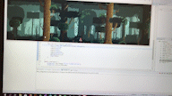
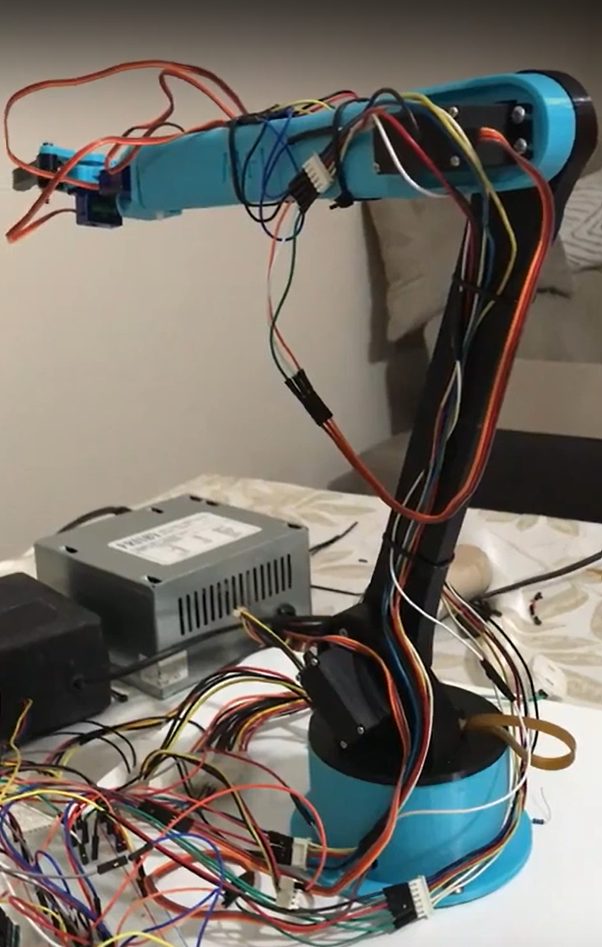
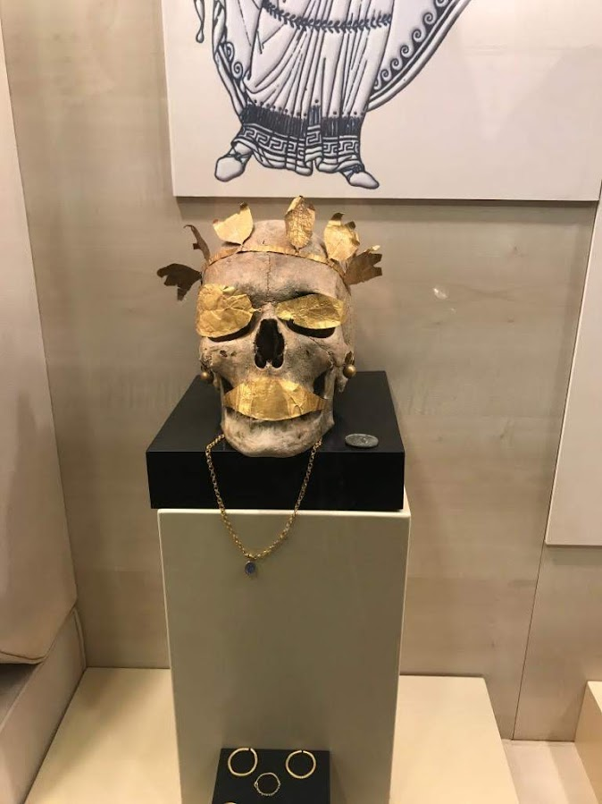

METUOR Model Uydu Takımı

ODTÜ Robot Topluluğu'na bağlı olan METUOR uzay teknolojileri takımında 2022 Ocak-Eylül ayları arasında teknik takım elemanı olarak çalıştım. Geliştirdiğimiz model uydunun video aktarımı ve güç sistemi alanlarında çalıştım. Video aktarımında çoklu cihazlarda çalışacağı için c++ python ve javascriptte yazılmış uygulamalar geliştirdim.
YetGen

14 hafta boyunca 21. yüzyıl yetkinlikleri, iş dünyası ve girişimcilik başta olmak üzere çeşitli eğitimler aldığımız YetGen eğitim programından Mayıs 2022'de mezun oldum. Programın kurucusu Erhan Erkut'un vizyonuyla beraber iş hayatı ve girişimcilik alanında farkındalık kazandım ve Küresel sorunlarla daha fazla ilgilenmeye başladım. İncelemek isterseniz
YetGen web sitesi
YetGen web sitesi
Stanford Üniversitesi CS Bridge Programı 2019

CS Bridge programı Stanford Üniversitesi ve Koç Üniversitesi'nin ortaklığıyla düzenlenen "bilgisayar programlamasına giriş" dersini 16 ve 17 yaşlarındaki gençlere öğretmek için dünzenlenmiş bir program. Ders müfredatı Stanford Üniversitesinin CS106A kodlu dersinin hızlandırılmış bir versiyonu. Program boyunca 2 hafta Koç Üniversitesi'nde kaldım ve programın sonunda bir bitirme projesi geliştirdim.
Projenin Github sayfası
Projenin Github sayfası


13. Uluslararası MEB Robot Yarışması

2019 yılında Milli Eğitim Bakanlığı'nın düzenlemiş olduğu Robot yarışmasına Endüstriyel Robotik kol kategorisinden katıldım. Robotumun mekanik kısmını Fusion 360 programında tasarladım ve 3 boyutlu yazıcı ile parçaların baskısını aldım. Robotun kontrol kısmını ise Arduino Uno kartı ile geliştirdim.
Robotumun ve yarışmanın lisemin web sitesinde yayınlanmış haberi
Robotumun ve yarışmanın lisemin web sitesinde yayınlanmış haberi
eTwinning Museology and Museum Education Project 2019

E-twinning eylemi, Avrupa Birliği, E-twinning'e üye okulların gerekli altyapıyı sağlayarak Bilgi ve İletişim Teknolojilerini kullanarak işbirliği yapmaya teşvik etmeyi amaçlayan bir Avrupa Komisyonu girişimidir.(Vikipedi 2022). Bu projede Amasya ve çevresindeki tarihi yerleri ziyaret ettim. Çevrimiçi teknolojiler kullanarak tanıtımını yaptım.
2204-A Lise Öğrencileri Araştırma Projeleri Yarışması 2019/1

Matematik dalında "Bu Soru Tabloda Olasılık" adında bir araştırma projesi geliştirdim. Araştırma projem ile olasılık problemlerini daha iyi anlamak için bu problemlere görsel bir yaklaşım sunan bir teknik geliştirdim. Proje süreci boyunca Olasılık Fonksiyonu, Binom Dağılımı, Gauss Dağıılımı ve Bernoulli Dağılımlarını araştırdım.
2204-A Lise Öğrencileri Araştırma Projeleri Yarışması 2018/1
Matematik ve Geometri alanlarında "İki Boyutlu Karesel Düzlem Üzerinde Tekrarlı Permütasyon Uygulaması" adında bir araştırma projesi geliştirdim. Araştırma projemde Permütasyon ve Çizgi Teorisi'nin (graph theory) yardımıyla iki boyutlu karesel düzlemlerde mümkün olan en verimli yolları hesaplayabilen bir masaüstü yazılım geliştirdim. Geliştirme sürecinde C# ve Windows Form teknolojilerini kullandım.